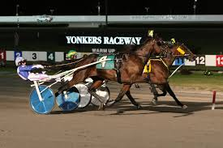

Welcome to Yonkers Raceway
Yonkers Raceway, founded in 1899 as the Empire City Race Track, is a one-half-mile standardbred harness racing dirt track and New York state-approved slots racino located at the intersection of Central Park Avenue and Yonkers Avenue in Yonkers, New York near the New York City border. We provide information on the different types of horse racing, on the horsemen and also on the race calendar.
Horse Racing
Are you new to horse racing? Take a look at our strategy guide & tips so that you can be ready to make the most of your experience.
Horsemen
Discover the different drivers, their wins & pursues, and find who drives your favorite horse
Calendar
From winter to summer, all upcoming races & events are here ! Have a look now